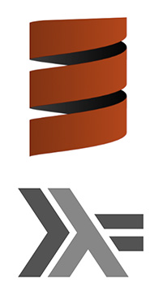

Home
This is Leigh Perry's Blog. That's me.
And this is my sporadic software engineering blog.
Recent Posts
- Monoids for single pass aggregations - November 11, 2019
- Monoids for single pass aggregations - October 28, 2019
- Monoids for single pass aggregations - October 25, 2019
- Abstracting effects MTL-style - October 14, 2019
- Design of a configuration library - September 1, 2019
- Converting fix function to Fix data structure - April 23, 2019
- Converting Haskell's fix function to Scala - April 3, 2019
- Deriving Haskell's fix function - April 1, 2019
- Getting started with Haskell tooling - March 1, 2019
- Generating functions in Scalacheck - November 23, 2018
- The mystery of Applicative's <*> operator (ap) - July 14, 2018
The complete set of blog posts is over here.
If this blog doesn't make much sense to you, you may have been searching for my photography website, which is over there.